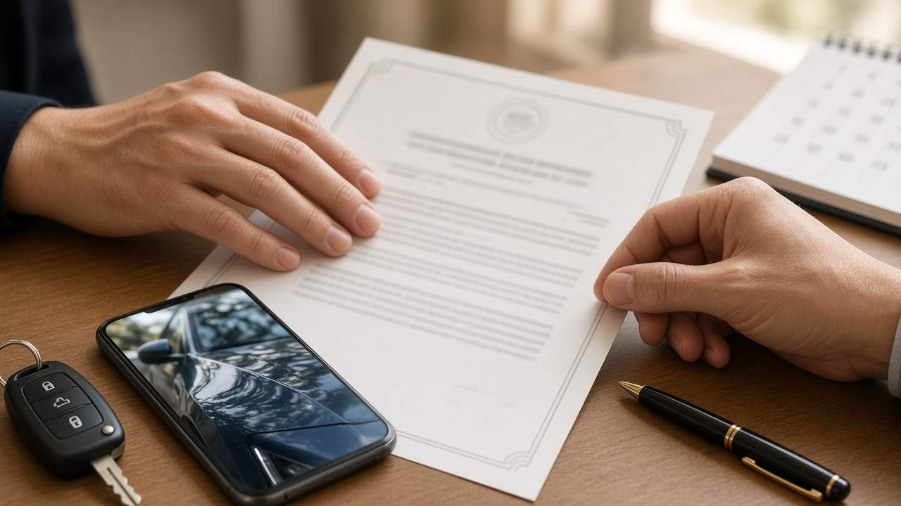
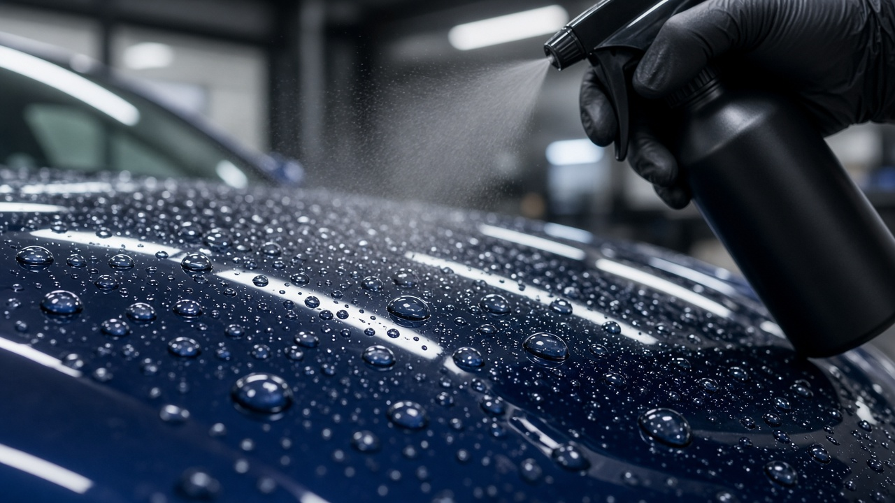

사고 수리 맡겼더니 유리막코팅 공짜로 해 준다는 말, 품질보증서 시공일자 하나로 보험사기 공범이 되는 이유

접촉사고가 나서 공업사에 차를 맡기면 가끔 이런 말을 듣게 돼요. 이번에 수리하면서 유리막코팅도 새로 해 드릴게요, 보험으로 처리되니까 따로 돈 안 드셔도 돼요. 사고 때문에 속상한 와중에 공짜로 광까지 내 준다니 솔깃할 수밖에 없죠. 그런데 사고 전에 코팅을 한 적이 없는 차라면 이 제안은 서비스가 아니라 보험사기일 수 있어요. 오늘은 금융감독원이 실제로 적발한 사례를 바탕으로 어떤 구조로 문제가 되는지, 차 주인은 무엇을 확인해야 하는지 정리해 볼게요.
공짜 유리막코팅이 왜 문제가 되는지부터 볼게요
유리막코팅은 흠집이나 부식, 오염을 줄이려고 차 표면에 유리 성질의 코팅제를 입히는 작업이에요. 사고로 코팅된 부위가 상하면 수리하면서 코팅 비용도 함께 청구되는 일이 있는데, 이때 보험사는 품질보증서를 보고 사고 전에 시공이 되어 있었는지 판단해요.
문제는 사고 전에 코팅이 없던 차예요. 사고 전에 시공한 것처럼 보증서 날짜를 꾸며 보험사에 청구하면, 원래 받을 수 없는 보험금을 받아 내는 셈이 돼요. 차 주인에게는 공짜처럼 보이지만 실제로는 보험금으로 비용을 메우는 구조라서, 차 주인이 이를 알고 동의했다면 함께 책임을 질 수 있어요.

금감원이 적발한 수법은 세 가지였어요
금융감독원은 2018년 6월 10일 유리막코팅 보험금 허위 청구 기획조사 결과를 발표했어요. 2015년 1월부터 2017년 7월까지 45개 업체가 허위 품질보증서로 4,135건, 약 10억원의 보험금을 받아 간 혐의가 드러났어요. 업체당 평균 2,200만원, 사고 1건당 평균 24만원 정도였고, 한 업체는 손해보험사 8곳에서 636건, 1억5,600만원을 받아 간 것으로 나타났어요.
수법은 크게 세 가지였어요. 첫째는 시공일자를 사고 전으로 꾸민 보증서예요. 어떤 공업사는 날짜를 너무 앞당기는 바람에 차가 처음 등록되기도 전에 코팅을 한 것처럼 적혀 있다가 들통났어요. 둘째는 보증서 한 장을 차종과 차량번호만 바꿔 여러 대에 반복해 쓴 경우예요. 원래 유리막코팅 보증서는 차 1대에 1건만 발급돼요. 셋째는 일련번호나 시공일자를 아예 비워 둔 보증서를 발급한 경우로, 한 업체는 이런 보증서 53건으로 1,400만원을 청구했어요.
차 주인도 처벌받을 수 있다는 점이 핵심이에요
금감원은 유리막코팅을 무료로 해 주겠다거나 돈을 나눠 주겠다는 정비업체와 짜고 보험금을 받으면 차 주인도 형사처벌을 받을 수 있다고 분명히 경고했어요. 보험사기방지특별법은 보험사기 행위를 10년 이하 징역 또는 5,000만원 이하 벌금으로 처벌하도록 정하고 있어요.
실제로 언론에 소개된 사례를 보면, 트럭과 접촉사고를 낸 차 주인에게 공업사가 사고 전부터 코팅이 되어 있던 것처럼 보증서를 만들자고 권했고, 보험사에 100만원 남짓을 청구한 뒤 차 주인과 나눠 가졌다고 해요. 처음엔 작은 혜택처럼 보여도 서류에 사실과 다른 날짜가 들어가는 순간 이야기가 완전히 달라진다는 점을 기억해 두시면 좋아요.

진짜 시공했다면 보증서에서 이 네 가지를 확인하세요
반대로 사고 전에 정말 돈을 내고 유리막코팅을 했다면 그 사실을 증명할 자료를 잘 챙겨 두는 게 중요해요. 금감원 설명에 따르면 유리막코팅제는 제품마다 고유한 일련번호가 있어서, 보증서에 적힌 이 번호와 시공일자로 위변조 여부와 보증기간을 확인할 수 있어요.
그래서 시공을 받을 때는 보증서에 일련번호가 적혀 있는지, 시공일자가 실제 날짜와 맞는지, 내 차종과 차량번호가 정확한지, 시공한 업체 이름과 연락처가 있는지를 그 자리에서 확인해 두세요. 결제 영수증이나 카드 내역, 시공 직후 사진도 함께 보관해 두면 나중에 사고가 났을 때 시공 사실을 설명하기가 훨씬 수월해요. 보증서 양식이 정해져 있지 않다 보니, 빈칸이 있는 보증서는 받는 쪽이 먼저 채워 달라고 요청하는 편이 안전해요.
왁스와 유리막코팅, 이렇게 구별할 수 있어요
시공 직후에는 왁스도 유리막코팅처럼 물방울이 동글동글 맺히기 때문에 눈으로는 구별이 어려워요. 보험개발원 자동차기술연구소는 2014년에 구별법을 내놓았는데, 코팅된 표면에 에탄올을 뿌린 뒤 물을 튀겼을 때 발수 성능이 사라지면 유리막이 아니라 왁스 코팅제로 볼 수 있다는 내용이었어요.
같은 발표에서 왁스류는 지속력이 1개월에서 3개월 정도이고, 유리막코팅은 1년에서 2년 정도 간다고 설명했어요. 시공비도 차이가 커서 당시 기준으로 광택을 포함한 왁스 작업은 25만원에서 35만원, 유리막코팅 전체 시공은 70만원에서 120만원 정도가 일반적이라고 소개됐어요. 지금 가격은 업체와 제품마다 다르니, 유리막이라고 해서 큰돈을 냈다면 어떤 제품을 썼는지 보증서로 꼭 남겨 두세요.
정리하면, 사고 수리 중에 공짜 유리막코팅 제안을 받았다면 사고 전에 실제로 시공한 적이 있는지부터 떠올려 보시면 돼요. 한 적이 없다면 정중히 거절하는 게 맞고, 이런 권유가 반복된다면 금융감독원이나 보험사의 보험사기 신고센터에 알릴 수 있어요. 2018년 6월 금감원 발표 기준으로 정리한 내용이니, 실제 보상 범위는 가입한 보험사에 직접 확인해 보세요.
참고 자료 금융감독원 유리막코팅 보험사기 기획조사 결과 발표 2018년 6월 10일 언론 보도, 보험개발원 자동차기술연구소 유리막코팅 구별법 2014년 10월 언론 보도
태그 유리막코팅 유리막코팅보험 자동차보험사기 품질보증서 사고수리 공업사 대물배상 보험사기방지특별법 왁스코팅 차량관리 금융감독원